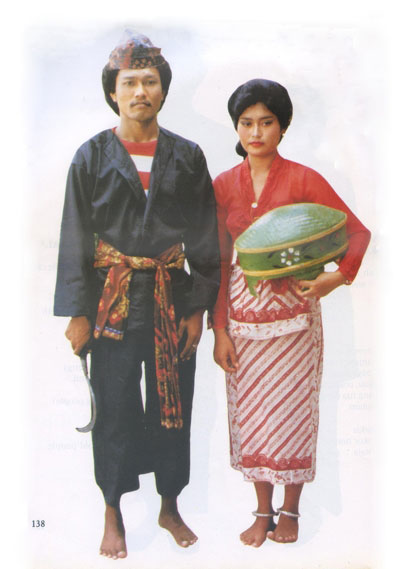
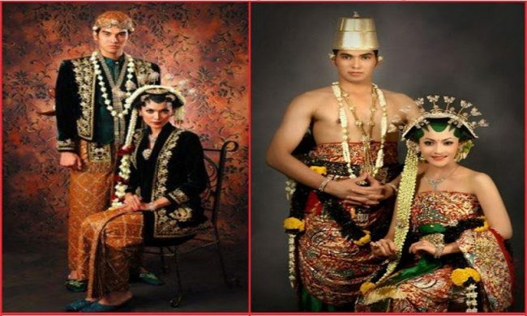

Pakaian Adat Jawa Timur
1. Pese'an Madura

Pakaian adat Jawa Timur dari Madura ini sangat familiar dan diingat oleh masyarakat pada umumnya, pakaian ini memiliki 2 wujud yaitu luaran baju berwarna hitam dan baju dalam nya kaos belang yang berwarna merah putih atau merah hitam, dan untuk celananya longgar serta panjang sampai mata kaki.
Pakaian yang satu ini sudah lumayan terkenal secara nasional bahkan mancanegara. berbeda dengan zaman dulu yang memakai pakaian ini hanya masyarakat Madura, sekarang masyarakat Jawa Timur banyak yang memakai nya, hingga akhirnya pakaian ini paten sebagai pakaian adat Jawa timur.
Zaman dulu baju ini dibuat dari bahan kain China, tetapi saat ini bahannya sudah dimodifikasi memakai bahan tetoran yang dibuat sendiri oleh masyarakat Madura.
2. Pakaian Mantenan

Nama pakaian mantenan ini sama seperti namanya mantenan yaitu pakaian pernikahan adat di Jawa Timur. Pakaian Mantenan ini digunakan saat kedua mempelai melakukan acara pernikahan dengan tata cara adat istiadat Jawa Timur.
Pakaian mantenan sangat banyak kalian temui dan banyak dipakai di berbagai tempat di Jawa Timur. Jenis pakaian ini juga selalu dilengkapi dengan aksesoris lain seperti odheng, kain, selempang, arloji rantai dan lain sebagainya.
3. Cak dan Ning Surabaya

Pakaian adat Cak dan Ning Jawa Timur ini berasal dari kota Surabaya. Hampir setiap tahun biasanya selalu diadakan ajang lomba pemilihan bujang dan gadis yang bernama Kontes Cak dan Ning. Dalam lomba tersebut, para bujang dan gadis biasanya memakai pakaian khas dari Surabaya tersebut. Pakain adat ini sempat tenar pada masanya dulu dan hingga saat ini juga masih kerap digunakan dalam acara-acara besar di kantor dan kediaman walikota atau di balai kota.
- Pakaian Adat Jawa Timur Cak dikenakan kaum pria
- - Beskap atau jas tutup untuk atasan
- - Jarik sebagai bawahan
- - Kuku macan sebagai hiasan yang digantung pada saku beskap
- - Terompah
- - Serta sapu tangan merah.
- Pakaian Adat Jawa Timur Cak dikenakan kaum wanita
- - Kebaya sebagai atasan
- - Jarik untuk bawahan
- - Kerudung lengkap dengan renda
- - Dan beragam aksesoris tambahan lainnya seperti anting, selop, selendang, dan gelang.